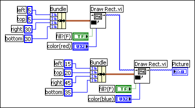

Use the Picture Functions VIs to draw shapes and enter text into a 2D picture control. You can draw points, lines, shapes, and pixmaps. Pixmaps of unflattened data are 2D arrays of color, where each value corresponds to a color or to an index into an array of RGB color values, depending on the color depth.
The first row of the Picture Functions palette contains VIs you use to draw points and lines. A point is a cluster of two 16-bit signed integers that represent the x- and y-coordinates of a pixel.
When you use the Picture Functions VIs, the picture remembers the position of the graphics pen. For most of the Picture Functions VIs, you must specify absolute coordinates�that is, relative to the origin (0, 0). With the Draw Line VI and the Move Pen VI, you can specify either absolute or relative coordinates. Relative coordinates are relative to the current location of the pen. You can use the Move Pen VI to change the location of the pen without drawing. Only the Draw Point VI, Move Pen VI, Draw Line VI, and Draw Multiple Lines VI change the location of the pen.
The second row of the Picture Functions palette contains VIs you use to draw a shape. Each of these VIs draws a shape in a rectangular area of a picture. You specify a rectangle as a cluster of four values that represent the left, top, right, and bottom pixels.
The third row of the Picture Functions palette contains VIs you use to draw text in a picture. The Get Text Rect VI does not draw any text. Instead, you use it to calculate the size of a bounding rectangle of a string.
The fourth row of the Picture Functions palette contains VIs you use to draw flattened and unflattened pixmaps in a picture, to apply a mask to an image, to obtain a subset of a source image, and to convert a picture data type to a flattened image data cluster.
The last row of the Picture Functions palette contains the empty picture constant, which you use when you need to start with or make changes to an empty picture. The last row of the palette also contains VIs you use to convert red, green, and blue values to the corresponding RGB color and to convert a color to its respective red, green, and blue components.
You can wire the pictures you create with the Picture Functions VIs only to a 2D picture control or to the picture input of a Picture Functions VI. LabVIEW draws the picture when it updates the 2D picture control on an open front panel.
Each Picture Functions VI concatenates its drawing instruction to the drawing instructions wired to the picture input and returns the concatenated drawing instructions in the new picture output.
The following block diagram uses the Draw Rectangle VI to draw two overlapping rectangles.

Many of the Picture Functions VIs have a color input to modify the color of the shapes and text. The easiest way to specify a color is to use a color box constant and click the constant to select a color.
To create colors as the result of calculations rather than with color box constants, you need to understand how a color box specifies a color using a numeric value.
A 32-bit signed integer represents a color, and the lower three bytes represent the red, green, and blue components of the color. For a range of blue colors, create an array of 32-bit integers where the blue values of each element change and are greater than the red and green values. To create a range of gray colors, create an array of 32-bit integers where the red, green, and blue values of each element are the same.